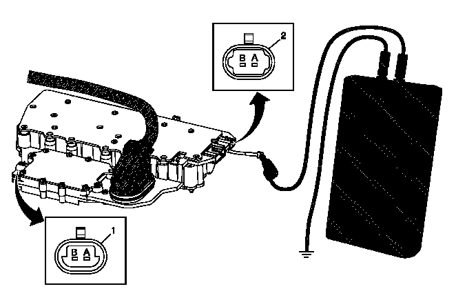

专用工具
- • EL 35616GM许可的端子测试组件
- • EL 38522可变信号发生器

此测试的目的是向控制电磁阀总成输入轴/输出轴转速传感器输入电路，提供模拟的输入轴/输出轴转速传感器 (ISS/OSS) 信号。
变速器输入轴转速传感器
- 1.将点火开关置于“OFF”（关闭）位置，将输入轴转速传感器线束连接器X3 (1) 从控制电磁阀总成上断开。
- 2.将点火开关置于“ON”（打开）位置，测试端子B电压是否为11 - 14伏。
- 如果不在规定范围
- 如果在规定范围
- 3.将点火开关置于“OFF”（关闭）位置，用EL 35616端子测试组件将EL 38522可变信号发生器红色引线连接至变速器控制模块上的输入轴转速传感器信号电路端子A。
- 4.连接EL 38522可变信号发生器的黑色引线至搭铁。
- 5.将EL 38522可变信号发生器设置为5伏，频率设置为300赫兹，占空比设置为50%或正常位置。
- 6.将点火开关置于“ON”（打开）位置，用故障诊断仪确认“Transmission ISS”（变速器输入轴转速传感器）参数在495-505转/分之间。
- 如果不在规定范围
- 如果在规定范围
- 7.全部正常。
变速器输出轴转速传感器
- 1.将点火开关置于“OFF”（关闭）位置，将输出轴转速传感器线束连接器X4 (2) 从控制电磁阀总成上断开。
- 2.将点火开关置于“ON”（打开）位置，测试端子B电压是否为11 - 14伏。
- 如果不在规定范围
- 如果在规定范围
- 3.将点火开关置于“OFF”（关闭）位置，用EL 35616端子测试组件将EL 38522可变信号发生器的红色引线连接至变速器控制模块上的输出轴转速传感器信号电路端子A。
- 4.连接EL 38522可变信号发生器的黑色引线至搭铁。
- 5.将EL 38522可变信号发生器设置为5伏，频率设置为300赫兹，占空比设置为50%或正常位置。
- 6.在点火开关置于“ON”（打开）位置时，用故障诊断仪确认“Transmission OSS（变速器输出轴转速传感器）”参数在745 - 825转/分之间。
- 如果不在规定范围
- 如果在规定范围
- 7.全部正常。